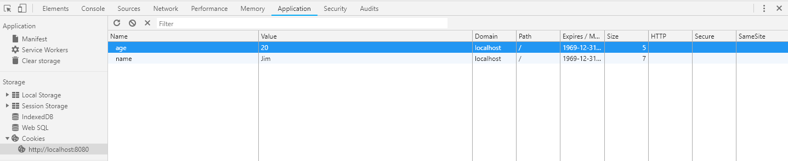
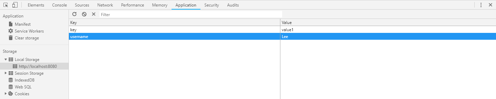

Cookie 是一种非常基础的客户端存储方式，得到广泛的支持
创建多个 cookie 的方法
document.cookie = 'name=Jim'
document.cookie = 'age=18'当创建多个 cookie 时只能像这样一个一个地创建，无法一次性创建多个
同一名字的 cookie 只能存在一个，因此再创建一个同名 cookie 相当于修改原有的 cookie
document.cookie = 'age=20'此时名为 age 的 cookie 的值由 18 变为了 20
在创建 cookie 时还可以指定元数据，比如默认情况下，cookie 会在浏览器关闭时删除，如果指定一个失效时间，则该条 cookie 可以存储到指定的这个时间
document.cookie = 'age=20; expires=Fri, 31 Dec 2019 23:59:59 GMT'如果将失效时间设置为过去的时间，会删除该条 cookie，这就是删除 cookie 的方法
读取 cookie 时可以得到当前所有 cookie 组成的字符串
var cookies = document.cookie
console.log(cookies) // "name=Jim; age=20; ..."很可惜，没有方法来获取指定的某条 cookie，也无法获取 cookie 的元数据
如果需要获取特定的某条 cookie 的值，只能对得到的 cookie 字符串进行操作了
用正则来匹配指定的 cookie 值
var age = /age=([^;]+);?/.exec(document.cookie)[1]在浏览器开发者工具中可以直接查看和编辑 cookie

这里有个库可以简单地操作 cookie，JavaScript Cookie
值得一提的是 cookie 通常会随着请求一起提交给后台，因此如果客户端存储太多 cookie 会造成请求体积变大，本身 cookie 存储的量也有限制，不适合存储太多数据，一般情况下都不建议使用 cookie，有更好的选择，就是 Web Storage
Web Storage 分为 Local Storage 和 Session Storage，两者使用方式是一样的，区别只是存储的时间不一样而已
判断浏览器是否支持 Web Storage，当使用哪个的时候就判断哪个
if ('sessionStorage' in window && window.sessionStorage) {
sessionStorage.setItem('key', 'value')
}
if ('localStorage' in window && window.localStorage) {
localStorage.setItem('key', 'value')
}基本使用方式
// 存储
// Web Storage 只能存储字符串值
// 因此对于复杂的数据可以转换为 JSON 格式
localStorage.setItem('names', JSON.stringify(['Jim', 'Lee']))
// 读取
// 对于 JSON 格式的数据需要解析
var names = JSON.parse(localStorage.getItem('names'))
// 删除
localStorage.removeItem('names')
// 全部删除
localStorage.clear()Session Storage 会在浏览器关闭时删除，而 Local Storage 会在本地持续存储，那么如何给 Local Storage 设置一个有效期呢
方案是可以随着存储的数据同时存储一个时间值，当获取存储数据的时候同时把这个时间值取出来和当前时间比较即可，如果这个存储的时间比当前时间小，则认为该条数据已经超过有效期，并删除该条数据
localStorage.setItem('names', JSON.stringify(['Jim', 'Lee']))
localStorage.setItem('_names_expires', new Date().getTime() + 3000) // 只存储3秒种
if (localStorage.getItem('_names_expires') < new Date().getTime()) {
// 存储的时间小于当前时间，删除该条数据
localStorage.removeItem('names')
// 同时把时间值也删除
localStorage.removeItem('_names_expires')
}与 Web Storage 相关的还有一个 storage 事件，当存储的值发生变化时，就会触发该事件
// 绑定事件处理程序
window.addEventListener('storage', function(event) {
console.log('旧值: ' + event.oldValue)
console.log('新值: ' + event.newValue)
console.log('键名: ' + event.key)
})
localStorage.setItem('username', 'Jim')执行上面的代码，会发现什么都没有发生，因为 storage 事件需要在浏览器的另一个实例中修改 Web Storage 才会触发，打开一个浏览器新标签页，输入相同的地址，在新标签页里修改 Web Storage
localStorage.setItem('username', 'Lee')在原来的标签页控制台可以看到信息打印出来了
旧值: Jim
新值: Lee
键名: username在浏览器开发者工具中可以直接查看和编辑 Local Storage 和 Session Storage

这里有个库可以更方便地操作 Web Storage，Store.js，该库为那些不支持 Web Storage 的浏览器还提供了兼容方案